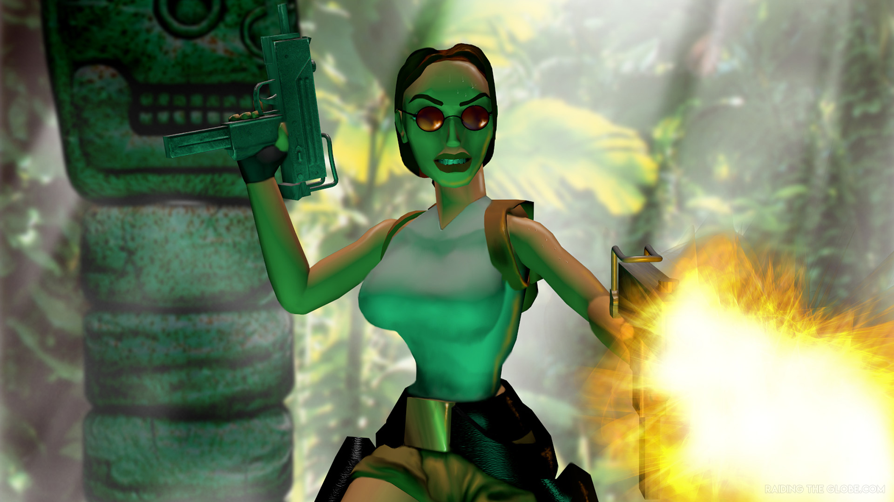

Development of the original Tomb Raider game began in 1994; it was released two years later.
Its critical and commercial success prompted Core Design to develop a new game annually for the next four years,
which put a strain on staff. The sixth game, The Angel of Darkness, faced difficulties during development and was considered a failure at release.
This prompted Eidos to switch development duties to Crystal Dynamics, which has been the series' primary developer since.
Other developers have contributed to spin-off titles and ports of mainline entries.
Tomb Raider games have sold over 95 million copies worldwide by 2022.
The series has generally been met with critical acclaim,
and Lara Croft has become one of the most recognisable video game protagonists,
winning accolades and earning places on the Walk of Game and Guinness World Records.
However she has also been the subject of controversy due to her sex appeal being used for marketing.
Lara Croft has become a cultural icon, with her enigmatic style, she fearlessly tackles all adversaries and conquers ancient demons to safeguard the world.
She has thrilled us one and all and taken us to places which we could previously only dream of.
Now is the time to recall those adventures, here we can see how Lara defeated those who stood against her and watch the adventures of Lara Croft unfold.
The tales are told in a comic book style so you can visualise as well as follow her adventures, through narrative and Lara's own thoughts.

Since the start of Tomb Raider, Lara underwent many changes, here is an almost complete comparison of the evolution of Miss Croft. Starting from Tomb Raider I and ending at the model for Lara in Tomb Raider Legend.